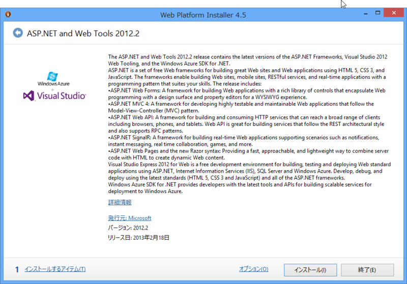

ASP.NET and Web Tools 2012.2
公開日：
（208日前に書いた下書きをそのまま公開してみるなど）

Last year the ASP.NET team started talking about something we're calling "One ASP.NET." I showed some mockups of our ideas last summer at the aspConf Keynote that you can watch online.
We also announced then that we would add new features to ASP.NET as out of band releases (OOB) without breaking existing functionality. This means that developers don't have to wait for the next version of Visual Studio for great web development features today. We're aiming to add to ASP.NET and Web Tools every 6 months.
For those that don't want to wait, Mads and the team also started a feature playground called Web Essentials. This is an extension to Visual Studio that updates all the time with ideas and brainstorms about how VS can be an even better editor for the web. As features "graduate" from Web Essentials, they move into ASP.NET and Web Tools proper. A bunch of features graduate with today's release.
Today we announced ASP.NET and Web Tools 2012.2. You can use the Web Platform Installer to get ASP.NET and Web Tools 2012.2 now.
Released: ASP.NET and Web Tools 2012.2 in Context - Scott Hanselman
- Web Platform Installer 4.5（Download the Microsoft Web Platform）
- WebEssentials 2012 2.5.1（Web Essentials 2013 RC now available - A Visual Studio extension）
- ASP.NET and Web Tools 2012.2（ASP.NET vNext : The Official Microsoft ASP.NET Site）
なんか立て続けにいろいろでたけど、本業のほうで扱えなかったこともあり、ブログを追っかけているだけで、個人的には消化しきれてなかった。
ASP.NET and Web Toolsについては、
- Visual Studio 2012 Update（4半期ごと）の Web 開発部分を先取りリリース
- ASP.NET のコアに変更を加えるものではなく、その周辺機能や開発支援機能を拡張するもの
- 6ヶ月おきのリリース
という理解でよいのだろうか。変更点は以下の通り。
- Enhancements to Web Publishing
- New Web API functionality
- New templates for Facebook Application and Single Page Application
- Real-time communication via ASP.NET SignalR
- Extensionless Web Forms via ASP.NET Friendly URLs
- Support for the new Windows Azure Authentication
日本語による包括的なまとめは、@chack411 さんがオススメ。